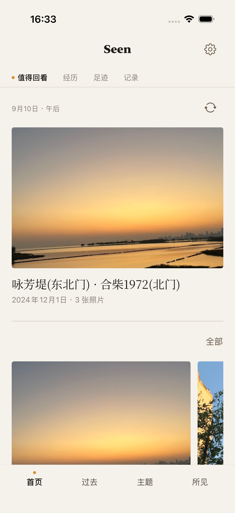

所见 Seen · 为 iPhone 而生
把见过，
变成经验。
从照片开始，把真实发生过的生活整理成经历，在时间、地点和发现中重新看见自己的过去。
了解如何开始App Store 发布准备中 · iOS 26.5 或更新版本

照片整理 · 经历
由你选择，由你留下。
选择照片，检查时间与地点，亲自确认一段经历。原照片保持不变。
过去 · 足迹 · 年度记录
让过去，有迹可循。
从日期找回那一天，从足迹回看走过的地方，在年度记录里看见时间的积累。
主题 · 发现 · 所见
把值得再看的，留下。
从已有经历发现联系，把喜欢的主题加入《所见》，继续编辑、回看与分享。
本地优先 · 可选 AI
自己的记录，
自己的选择。
核心经历保存在本机。无需 AI，也能整理、回看、收藏和分享。想换个角度时，可以用自己的 DeepSeek API Key 开启“重新看见”。发送前由你确认，模型费用由服务商收取。
了解数据如何处理 ↗